SpreadJS provides the option to automatically add row and column outlines to cell ranges containing formulas. You can access the "Auto Outline" option in Data > Group ribbon button.
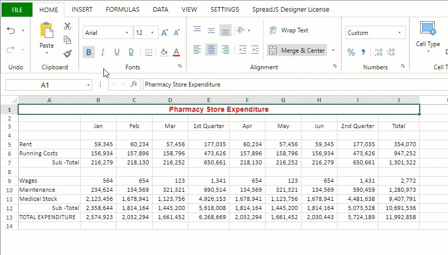
If outlines already exist in a worksheet, then a confirmation dialog pops up.
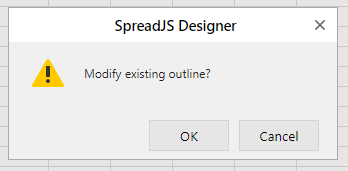
If selected "OK", all the existing outlines are removed and new outlines are created according to the current formulas.
You can observe the following behavior while applying automatic outlines.
| Behavior | Example |
|---|---|
| The outline direction follows the formula cell position. | 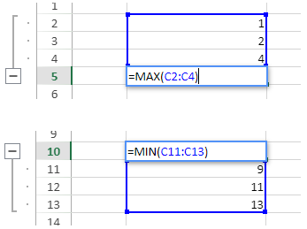 |
| If a row or column range has a different outline direction than the other, the latter one will be missed. | 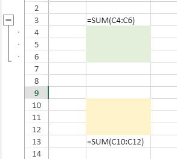 |
| If row or column ranges intersect, only the first outline is grouped. | 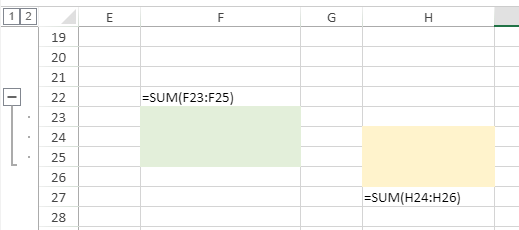 |
| If a formula cell's range also contains a formula. all the legal cells are merged. | 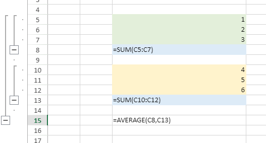 |
| If multiple cells are combined into a legal cell range, an outline is added. | 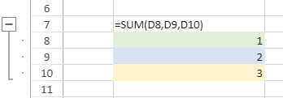 |
The following cell ranges are illegal in terms of adding an outline.
| Cell Range | Example |
|---|---|
| Single cell | 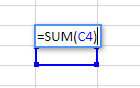 |
| Multiple rows and multiple columns | 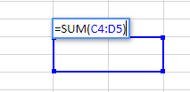 |
| A misplaced row or column | 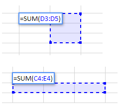 |
| Cross sheet range | 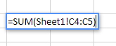 |
| Circular reference | 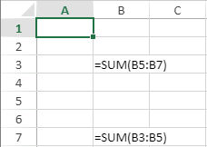 |
You can clear all outlines in the active sheet by using "Clear Outline" in the Data > Ungroup ribbon button.
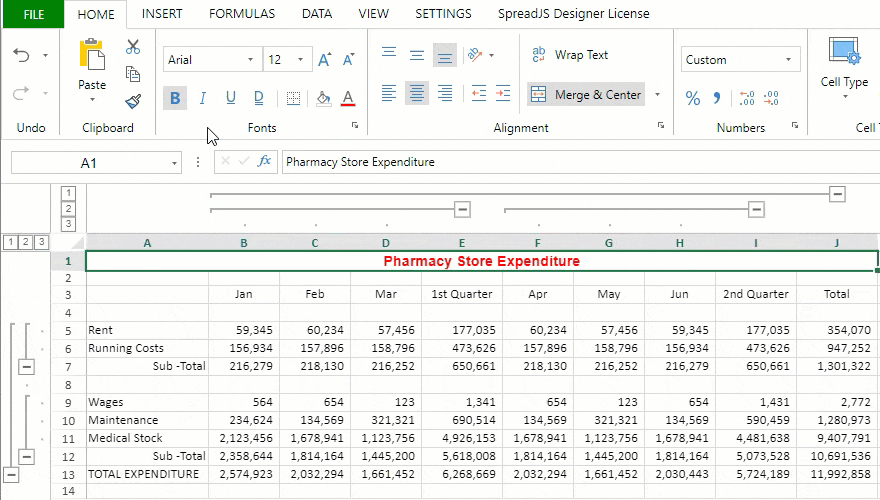